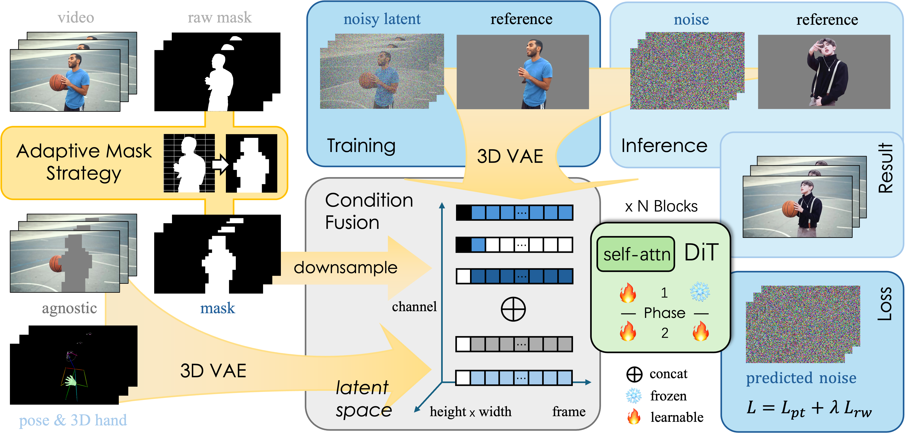

|
I am a 2nd-Year master student in Artificial Intelligence at Future Media Lab of Tsinghua University, under the guidance of Prof. Haoqian Wang.. I received my bachelor degree in Computer Science and Technology at Sichuan University in June 2023. My current research interest lies in 3D / video generation and editing, particularly focusing on human-related tasks like human preference alignment (via post-training) and personalized AI generated content customization. |

|
|  |
Weitao Wang , Zichen Wang , Hongdeng Shen , Yulei Lu , Xirui Fan , Suhui Wu , Jun Zhang^ , Haoqian Wang^ , Hao Zhang` ^ Corresponding authors ` Project leader Arxiv Preprint, 2025 With the rapid progress of video generation, demand for customized video editing is surging, where subject swapping constitutes a key component yet remains under-explored. Prevailing swapping approaches either specialize in narrow domains—such as human-body animation or hand-object interaction—or rely on some indirect editing paradigm or ambiguous text prompts that compromise final fidelity. In this paper, we propose DreamSwapV, a mask-guided, subject-agnostic, end-to-end framework that swaps any subject in any video for customization with a user-specified mask and reference image. To inject fine-grained guidance, we introduce multiple conditions and a dedicated condition fusion module that integrates them efficiently. In addition, an adaptive mask strategy is designed to accommodate subjects of varying scales and attributes, further improving interactions between the swapped subject and its surrounding context. Through our elaborate two-phase dataset construction and training scheme, our DreamSwapV outperforms existing methods, as validated by comprehensive experiments on VBench indicators and our first introduced DreamSwapV-Benchmark. |

|
Weitao Wang* , Haoran Xu* , Yuxiao Yang , Zhifang Liu , Jun Meng^ , Haoqian Wang^ * Equal contribution ^ Corresponding authors The Association for the Advancement of Artificial Intelligence (AAAI), 2025 Recent years have witnessed remarkable progress in 3D content generation. However, corresponding evaluation methods struggle to keep pace. Automatic approaches have proven challenging to align with human preferences, and the mixed comparison of text- and image-driven methods often leads to unfair evaluations. In this paper, we present a comprehensive framework to better align and evaluate multi-view diffusion models with human preferences. To begin with, we first collect and filter a standardized image prompt set from DALL⋅E and Objaverse, which we then use to generate multi-view assets with several multi-view diffusion models. Through a systematic ranking pipeline on these assets, we obtain a human annotation dataset with 16k expert pairwise comparisons and train a reward model, coined MVReward, to effectively encode human preferences. With MVReward, image-driven 3D methods can be evaluated against each other in a more fair and transparent manner. Building on this, we further propose Multi-View Preference Learning (MVP), a plug-and-play multi-view diffusion tuning strategy. Extensive experiments demonstrate that MVReward can serve as a reliable metric and MVP consistently enhances the alignment of multi-view diffusion models with human preferences. |

|
Weitao Wang , Haoran Xu , Jun Meng^ , Haoqian Wang^ ^ Corresponding authors Arxiv Preprint, 2025 As 3D generation techniques continue to flourish, the demand for generating personalized content is rapidly rising. Users increasingly seek to apply various editing methods to polish generated 3D content, aiming to enhance its color, style, and lighting without compromising the underlying geometry. However, most existing editing tools focus on the 2D domain, and directly feeding their results into 3D generation methods (like multi-view diffusion models) will introduce information loss, degrading the quality of the final 3D assets. In this paper, we propose a tuning-free, plug-and-play scheme that aligns edited assets with their original geometry in a single inference run. Central to our approach is a geometry preservation module that guides the edited multi-view generation with original input normal latents. Besides, an injection switcher is proposed to deliberately control the supervision extent of the original normals, ensuring the alignment between the edited color and normal views. Extensive experiments show that our method consistently improves both the multi-view consistency and mesh quality of edited 3D assets, across multiple combinations of multi-view diffusion models and editing methods. |
|
Based on a template by Jon Barron.
|